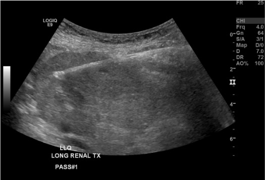

Indications / Contraindications
Native Kidney Indications
- Unexplained progressive renal failure / AKI
- Nephrotic syndrome
- Significant nonnephrotic proteinuria (>1 g/day)
- Glomerular hematuria / microscopic hematuria
- Systemic diseases with renal involvement: vasculitis, lupus (SLE), amyloid, HIV nephropathy, diabetic nephropathy with atypical features
Transplant Kidney Indications
- Rejection evaluation (de novo or follow-up)
- Subclinical rejection (protocol biopsy — histologic rejection may precede clinical signs)
- Rule out recurrent or de novo glomerular disease
- Lupus: interval biopsy post-treatment (clinical remission may overestimate histologic remission)
Focal / Mass Biopsy Indications
- Indeterminate solid renal mass before surgical or ablative treatment
- Bosniak category III cystic lesions (up to 39% can be benign)
- Required before percutaneous ablation per AUA guidelines (if <3cm)
- ~37% of solid masses referred for ablation turn out benign on biopsy
Contraindications
- Absolute: Active pyelonephritis or overlying skin/soft tissue infection along biopsy trajectory
- Relative: Coagulopathy (INR >1.5–1.8, platelets <50×10⁹/L); uncontrolled hypertension (SBP >140–160 mmHg — 10× increased bleeding risk; 23× if SBP >170 mmHg); hydronephrosis; atrophic kidneys; multiple cysts obscuring access
- No longer contraindications: Solitary kidney, horseshoe kidney (given improving safety profiles)
Pre-Procedure Checklist
Relevant Anatomy
Native Kidney
- Lower pole target (preferred): Farthest from hilum and collecting system; approach from posterolateral flank
- Avoid medial hilum (renal artery, vein, ureter), collecting system, and renal pelvis
- Target cortex, not medulla: Cortical cores contain glomeruli; target posterior cortex just inside the renal capsule; medullary cores have few glomeruli and high bleeding risk
- Cortex is hypoechoic rim on US; medulla is echogenic pyramids — use this to guide needle depth
Transplant Kidney
- Superficial and easily accessible in the iliac fossa; approach from anterolateral
- Lower pole preferred; avoid upper pole (near iliac vessels)
- Careful — transplant is superficial and easy to reach but also close to iliac vessels
Danger Structures
- Renal artery and vein (hilum), ureter, segmental vessels
- Adrenal gland (superior pole), adjacent bowel (must confirm on US)
- Measure skin-to-capsule distance before choosing needle length
How I Do It
Default RadCall approach + community cards
Supplies
Cortical Tangential Approach — Steps
Position
Pre-procedure US survey
Sterile prep and drape
Local anesthesia
Skin incision
Establish the cortical tangential trajectory
Advance coaxial introducer to capsule margin

Breath-hold and fire
Immediate US check
Repeat passes + core inspection
Completion
Troubleshooting
Insufficient glomeruli on core inspection
Likely cause: Needle tip in medulla rather than cortex, or fired too shallow.
Next step: Advance needle 1–2 mm more into cortex before firing on next pass. Confirm cortical position on US — cortex is hypoechoic rim; medulla is echogenic pyramids.
Needle visible but tip unclear on US
Likely cause: Poor angle of insonation; needle not in beam plane.
Next step: Use tissue harmonics. Ensure needle is perpendicular to the ultrasound beam. Gently jiggle the stylet to generate motion artifact at the tip for localization.
Patient unable to cooperate with breath-hold
Likely cause: Pain, anxiety, or inability to follow commands.
Next step: Coordinate with anesthesia for brief apnea during firing. Use real-time US to track kidney movement and time the firing to the correct respiratory phase.
Significant hematoma during procedure
Likely cause: Vessel injury; uncontrolled hypertension; coagulopathy.
Next step: Stop immediately. Apply pressure. Reassess with US serially. Extend observation period. Prepare for angiography/embolization if active bleeding.
Difficulty accessing lower pole (patient habitus)
Likely cause: Obesity, deep kidney, difficult positioning.
Next step: Try slight kidney rotation with US probe pressure. Adjust probe position. Consider deeper approach or a longer needle. Consider CT guidance for morbidly obese patients.
Non-diagnostic biopsy of focal renal mass
Background: Up to 21% of solid renal mass biopsies are non-diagnostic. Of 119 cores yielding no diagnosis, 13 of 21 repeat biopsies identified malignant lesions. "Oncocytic elements" without a definitive diagnosis should be managed as malignant neoplasm.
Next step: Repeat biopsy. For lesions <3 cm, watchful waiting with follow-up CT is an option. If mass is not visible on unenhanced CT, use first needle as intrarenal landmark, administer IV contrast, confirm position on nephrographic phase CT, then proceed with sampling.
Complications
Common / Major
- Perirenal hematoma — most common; ~90% minor (asymptomatic on imaging only); ~1–2% clinically significant. Management: observation + vitals; transfuse for symptomatic anemia; angiography/embolization for active bleeding
- Gross hematuria (~3–5%) — usually self-limited (clears within 48–72h); serious if clot retention occurs. Management: hydration, Foley catheter for retention; cystoscopy/embolization for persistent bleeding
- AV fistula (~15% of all renal biopsies on Doppler; 95% are asymptomatic and close spontaneously; 46.6% resolve by 30 days, 95.4% by 3 months). Hemodynamically significant: intervene only for persistent hematuria, resistant hypertension, high-output heart failure, or AKI from steal phenomenon. Management: angiography and coil/plug embolization
- Arterial pseudoaneurysm — rare. Management: angiography and embolization
Rare / Specific
- Page kidney — perirenal hematoma causing renovascular hypertension by extrinsic compression (rare). Diagnosis by renin measurement. Management: surgical or percutaneous drainage
- Death — extremely rare (<0.1%)
- Transplant-specific: Ureteral injury (rare), lymphocele, graft loss from uncontrolled hemorrhage
- Infection — rare with sterile technique; increased risk if active urinary infection present (absolute contraindication)
Post-Procedure Care
Monitoring
- 4–6h observation (some centers admit overnight for high-risk cases)
- Vitals q30 min × 2h then q1h × 2h
- Urine color monitoring — document gross hematuria; serial urinalysis (optional)
- CBC at 4–6h (optional); critical drop in Hgb → CT for hematoma evaluation
- BP control post-procedure: hypertension post-biopsy significantly increases bleeding risk
Discharge + Instructions
- Discharge criteria: Stable vitals, no gross hematuria, tolerating PO, Hgb stable (if checked)
- Bed rest × 24h
- Avoid strenuous activity × 1–2 weeks
- Drink extra fluids
- Return immediately for: Flank pain, bright red urine, hypotension, dizziness
Critical Pearls
Specimen Handling
Container 1 — Formalin (10%)
- Light microscopy and immunohistochemistry (IHC)
- Standard hematoxylin & eosin, PAS, silver, trichrome stains
- Largest core (most glomeruli)
- Most 'formalin' fixatives are mixtures — confirm with your lab whether the specific fixative is compatible with EM before use
Container 2 — Glutaraldehyde
- Electron microscopy (EM)
- Use a 1 mm³ sample — a tiny sliver of tissue, NOT an entire core
- Must be placed in glutaraldehyde immediately — formalin irreversibly destroys ultrastructure
Container 3 — Saline / Michel's Media
- Immunofluorescence (IF) — IgG, IgA, IgM, C3, C1q, fibrinogen
- Normal saline or Michel's transport media (if delayed processing)
- Do NOT use formalin
Core Adequacy
- Examine cores under dissecting microscope if available — target ≥10–12 glomeruli per core
- For transplant protocol: minimum 2 adequate cores; follow Banff criteria
- For culture (suspected infection/pyelonephritis): place in sterile saline (not formalin)
Labeling + Logistics
- Label each container immediately with patient name, MR, date, site, pass number
- Call pathology in advance for special handling instructions
- Confirm ALL three containers are ready and available before starting the procedure